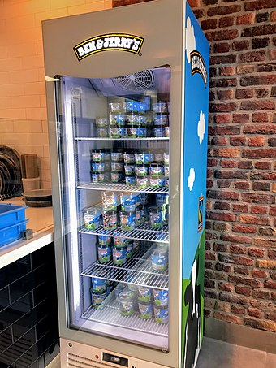
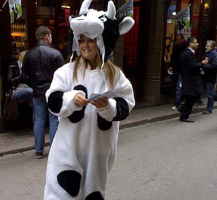

Contents
Ben & Jerry's Homemade Holdings, Inc.
Ben & Jerry's Homemade Holdings Inc., trading and commonly known as Ben & Jerry's, is a Vermont, United States-based company that manufactures ice cream, frozen yogurt, and sorbet. Founded in 1978 in Burlington, Vermont, it was sold in 2000 to British conglomerate Unilever. Today, it operates globally as a fully owned subsidiary of Unilever. Its present-day headquarters is in South Burlington, Vermont, with its main factory in Waterbury, Vermont.
The company was founded by Ben Cohen and Jerry Greenfield, two Jewish men who had been friends since their childhood in Merrick, New York. Although Greenfield finished college, he found himself unable to make his way into medical school. Cohen dropped out of school. In 1977, Cohen and Greenfield completed a correspondence course on ice cream making from Pennsylvania State University's creamery. Cohen has severe anosmia, a lack of a sense of smell, and so relies on mouthfeel and texture to provide variety in his diet. This led to the company's trademark chunks being mixed in with their ice cream. On May 5, 1978, with a $12,000 investment (equivalent to $48,000 in 2020), Cohen and Greenfield opened an ice cream parlor in a renovated gas station in downtown Burlington, Vermont. In 1979, they marked their anniversary by holding the first "free cone day", now an annual event at every Ben & Jerry's store.
In 1980, Cohen and Greenfield rented space in an old spool and bobbin mill on South Champlain Street in Burlington and started packing their ice cream in pints. The first Ben & Jerry's franchise opened in 1981, on Route 7 in Shelburne, Vermont. In 1983, Ben & Jerry's ice cream was used to build "the world's largest ice cream sundae" in St. Albans, Vermont; the sundae weighed 27,102 pounds (12,293 kg). That same year, the cows on their cartons were redesigned by local artist Woody Jackson.
In 1984, Häagen-Dazs wanted to limit distribution of Ben & Jerry's in Boston, prompting Ben & Jerry's to file suit against the parent company, Pillsbury, in its "What's the Doughboy Afraid Of?" campaign. In 1987, Häagen-Dazs again tried to enforce exclusive distribution, and Ben & Jerry's filed its second lawsuit against the Pillsbury Company.

In 1985, the Ben & Jerry's Foundation was established at the end of the year with a gift from Ben & Jerry's to fund community-oriented projects; it was then provided with 7.5% of the company's annual pre-tax profits. In 1986, Ben & Jerry's launched its "Cowmobile", a modified mobile home used to distribute free scoops of Ben & Jerry's ice cream in a unique, cross-country "marketing drive"—driven and served by Ben and Jerry themselves. The "Cowmobile" burned to the ground outside of Cleveland four months later, but there were no injuries. Ben said it looked like "the world's largest baked Alaska". In 1987, as a tribute to guitarist Jerry Garcia & Grateful Dead fans everywhere, Ben & Jerry's presented its first ice cream named for a rock legend and the most famous of fan-suggested flavors, "Cherry Garcia". In 1988, the two men won the title of U.S. Small Business Persons of the Year, awarded by U.S. President Ronald Reagan. Also that year, the first brownies were ordered from Greyston Bakery, which led to the development of the popular Chocolate Fudge Brownie flavor. In 1992, Ben & Jerry's joined in a co-operative campaign with the national non-profit Children's Defense Fund; the campaign goal was to bring children's basic needs to the top of the national agenda. Over 70,000 postcards were sent to Congress concerning kids and other national issues. In 1995, they hired Robert Holland, Jr. as CEO after holding a "Yo! I'm your C.E.O." essay contest as part of the search. Holland left after 20 months following philosophical differences and was replaced by Perry Odak in 1997.
In 1989, Ben & Jerry's revealed their opposition to the use of rBGH (recombinant bovine growth hormone) in all their products. This genetically engineered hormone is sometimes given to cows to boost milk production, but Ben & Jerry's does not support this practice and is in favor of using less chemically intensive ingredients for the safety of consumers and the environment.
In 1994, Ben & Jerry's: The Inside Scoop, written by Fred "Chico" Lager, former CEO of Ben & Jerry's Ice Cream, was published. The book tracks the history of how Ben & Jerry's Ice Cream got started. The book focuses on "How Two Real Guys Built a Business with a Social Conscience and a Sense of Humor."
In April 2000, Ben & Jerry's sold the company to British multinational food giant Unilever. In the acquisition agreement, Unilever agreed to carry on the company’s tradition of engaging "in these critical, global economic and social missions". Although the founders' names are still attached to the product, they do not hold any board or management position and are not involved in day-to-day management of the company.
In 2001, Ben & Jerry's U.S. completed the transition to "Eco-Pint" packaging, which packaged all pint flavors in environmentally friendly unbleached paperboard Eco-Pint containers, a decision it later reversed. The use of brown-kraft unbleached paperboard had been a critical first step toward a totally biodegradable pint made without added chlorine. Due to what they described as increasing supply, quality, and cost challenges, Ben & Jerry's discontinued the use of the Eco-Pint in 2006, transitioning to a pint container made out of a bleached paperboard that it said was more readily available.
On Earth Day in 2005, when a vote in the U.S. Senate proposed the opening of the Arctic National Wildlife Refuge to oil drilling, Ben & Jerry's launched a protest by creating the largest ever Baked Alaska, which weighed 900 pounds (410 kg), and placed it in front of the U.S. Capitol Building.
In March 2009, "CyClone Dairy" launched an advertising campaign and a website to promote its milk products, which purportedly came exclusively from cloned cows. On April 1, 2009 (April Fool's Day), Ben & Jerry's announced that it was behind this fake company. Ben & Jerry's had created the tongue-in-cheek hoax to raise awareness of the increasing presence of products from cloned animals within American food and to campaign for a tracking system of cloned-animal products. The hoax was revealed on April Fool's Day with the message: "We believe you should have the right to choose which foods you eat – and not to eat cloned foods if you don't want to. And that's why Ben & Jerry's believes we need a national clone tracking system, so people and companies can know where their food is coming from."
In 2010, Jostein Solheim, a Unilever executive from Norway, was appointed CEO and had this to say about the transition: "My mantra that I've repeated a hundred times since starting at Ben & Jerry's is: 'Change is a wonderful thing,'" he said. "The world needs dramatic change to address the social and environmental challenges we are facing. Values-led businesses can play a critical role in driving that positive change. We need to lead by example, and prove to the world that this is the best way to run a business. Historically, this company has been and must continue to be a pioneer to continually challenge how business can be a force for good and address inequities inherent in global business."
In 2013, Ben & Jerry's committed to making their products GMO-free in support of mandatory GMO labeling legislation.
In 2018, Matthew McCarthy, previously a Unilever executive, was appointed CEO, replacing Solheim.
On 19 July 2021, it was announced that Ben & Jerry's plans to end sales in "Occupied Palestinian Territory", within which Israeli settlements are considered illegal under international law. Due to the refusal of Ben & Jerry's Israel, the local franchisee since 1987, to comply with this policy, the company statement said it did not plan to renew the franchise in 2022. It has been suggested that the decision, while not technically a boycott given the lack of legal recognition of the Palestinian territories as a formal part of Israel under Israeli law, may run foul of anti-boycott laws in a number of US states. The statement, issued by Unilever, was criticised by Ben & Jerry's Independent Board of Directors, which had not wanted to comment on the continuation of sales in other parts of Israel, as this required board approval.
Ben & Jerry's has production facilities in the following locations:
The most popular Ben and Jerry's flavour had been "Cherry Garcia" for more than a decade until 2013 when an official survey taken among the general public found Cookie Dough was the winner with 60% and in the last place was chocolate chip brownie with 8.5%. The company website states (as of December 2020) that the most popular flavor is "Half Baked", with "Cherry Garcia" placing second, and "Chocolate Fudge Brownie" following in third. It is unclear to what degree the popularity of flavours reflects their availability. In the United Kingdom, "Charry Garcia" ice cream has disappeared from supermarkets, and those who desire it must obtain it from a Ben & Jerry's Scoop Shop (Cherry Garcia frozen yogurt is no longer available at all in the United Kingdom).
The "Vermonster" is a large ice cream sundae served in a "Vermonster Bucket" in Ben & Jerry's "scoop shops." Its ingredients are 20 scoops of ice cream, 4 bananas, 4 ladles of hot fudge, 3 chocolate chip cookies, 1 chocolate fudge brownie, 10 scoops of walnuts, 2 scoops each of any 4 toppings, and whipped cream. It contains 14,000 calories (59,000 kJ), and 500 grams (18 oz) of fat. Since 2009, the Vermonster Challenge is an annual charity event held by Ben & Jerry's in which teams of four compete to finish a Vermonster and win free ice cream for a year.
"Chubby Hubby" consists of vanilla malt ice cream swirled with fudge and peanut butter, and containing pretzel nuggets covered in fudge and filled with peanut butter. During the month of September 2009, Ben and Jerry's, in partnership with Freedom to Marry, renamed "Chubby Hubby" to "Hubby Hubby," in celebration of the legalization of same-sex marriage in the company's home state of Vermont. The carton featured the image of two men in tuxedos getting married beneath a rainbow.
On March 13, 2012, Ben & Jerry's announced it would be changing the name of one of its ice cream flavors in the UK in support of equal marriage rights for same-sex couples. "Oh! My! Apple Pie!" would become "Apple-y Ever After" and tubs would feature a gay couple atop a wedding cake decorated with rainbows.
"Chocolate Chip Cookie Dough" was temporarily renamed "I Dough, I Dough" in the United States during the summer of 2015. This was in celebration of United States Supreme Court's ruling in support of same-sex marriage. The proceeds from sales were to go to the Human Rights Campaign (a nonprofit advocacy group for LGBT rights).
Ben Cohen and Jerry Greenfield appeared on The Colbert Report on March 5, 2007, to promote their new ice cream flavor, "Stephen Colbert's AmeriCone Dream", and Cohen's progressive advocacy group TrueMajority.
The company renamed a flavor, "Yes Pecan!", in reference to Barack Obama's victory in the 2008 U.S. presidential election. They decided in January 2009 to donate all proceeds made on the sale of that flavor to the Common Cause Education Fund.
On March 2, 2011, Cohen and Greenfield appeared on Late Night with Jimmy Fallon and unveiled their new flavor of ice cream, "Late Night Snack", whose carton features a picture of Jimmy Fallon on it.
On February 24, 2012, Ben & Jerry's released a new Greek Frozen Yogurt line, which came in several flavors: "Strawberry Shortcake", "Blueberry Vanilla Graham", "Raspberry Fudge Chunk", "Banana Peanut Butter", and "Vanilla" (scoop shop exclusive): On April 12, 2013, "Pineapple Passionfruit", "Vanilla Honey Caramel", and "Liz Lemon" were added to the Greek Yogurt line. The Liz Lemon flavor was inspired by a character of the same name created by actress Tina Fey as the main character on the NBC television sitcom 30 Rock.
On February 17, 2015, Cohen and Greenfield appeared on The Tonight Show starring Jimmy Fallon and unveiled their new flavor of ice cream, "The Tonight Dough", with all of its proceeds going to the SeriousFun Children's Network that supports camps for children with major illnesses.
In 2015, Charoset flavored ice cream became widely available in time for the Passover holiday.
In April 2015, the company confirmed that it was working on vegan options, after hearing consumers' feedback, led by a petition and FARM organization. In early February 2016, the company announced a new all-vegan line with four flavors. Two of these are versions of existing flavors – "Chunky Monkey" and "Chocolate Fudge Brownie" – and two are all-new vegan-only flavors: "Coffee Caramel Fudge" and "Peanut Butter & Cookies".
In February 2017, three new non-dairy flavors were added: Caramel Almond Brittle, Cherry Garcia, and Coconut Seven Layer Bar.
In January 2018, the company added two new non-dairy flavors to its growing line of vegan options. Peanut Butter Half Baked features chocolate and peanut butter with fudge brownies and pieces of peanut butter cookie dough, while Cinnamon Buns is made with cinnamon-spiced ice cream and features cinnamon bun dough and a cinnamon streusel swirl. Ben and Jerry's non-dairy line also features flavors such as PB & Cookies, Chocolate Fudge Brownie, and Caramel Coffee fudge. Among their newest non-dairy flavors are the following: chocolate caramel cluster, chocolate chip cookie dough, and chocolate salted n' swirled. Ben & Jerry's also just released new snack-able "cookie dough chunks" that have a vegan option for the non-dairy connoisseur.They continue to take new non-dairy flavor suggestions on their website.
In October 2018, Ben and Jerry's launched a campaign for a limited-edition ice cream flavor that also held a political message focusing on resisting the US's current governmental administration under Trump. The campaign debuted the new flavor, ‘Pecan Resist’ and included new packaging that advertised their messages. The company donated $25,000 to four organizations that supported women's and immigrant rights, climate justice, and racial justice.

Woman in cow costume promoting Free Cone Day outside a Ben & Jerry's shop in Stockholm, Sweden
Free Cone Day is an annual event held between late March and early May, in which Ben & Jerry's scoop shops give out free ice cream cups and cones. Free Cone Day was first held on Saturday, May 5, 1979, by Ben and Jerry as a customer and staff appreciation event for the first anniversary of their store's opening. However, due to the COVID-19 pandemic, the event was put on hiatus in 2020 and 2021.
Every year over one million cones are given away, prompting the company's ad slogan "Be One In A Million." Charitable organizations are often present at the stores each year and enjoy a significant amount of fundraising success. Often, local celebrities show up at various stores, promoting the day and the charities there. Sometimes the event is scheduled to coincide with Earth Day and sometimes volunteers are on hand with clipboards and voter registration forms to help those who would like to register to vote (in those countries where that is necessary).
The Center for Science in the Public Interest, a consumer-advocacy group, urged Ben & Jerry's to stop labeling their ice cream as "all natural" due to the company's use of corn syrup, alkalised cocoa, and other chemically modified ingredients. In September 2010, the company agreed to stop labeling their ice cream and frozen yogurt as "all natural".
In 2011, Ben & Jerry's released a flavor named Schweddy Balls, in homage to the Saturday Night Live (SNL) skit of the same name. This received protest from One Million Moms, a project of the conservative Christian group American Family Associated, who said that the name was too explicit for grocery store shelves. Spokesperson Monica Cole explained to the media: "I realize it could be a lot worse, but are they going to progressively get worse if we don't say something? Maybe they'll think twice before they come up with another inappropriate name for ice cream." However, the expression of disdain was not unanimous among U.S. parents, as mother Gina Ragusa said to The Huffington Post: "We just think it's funny, that's all, and honestly we all really want to try it", adding that she consistently checks for the item's availability at her local supermarket. Actor Alec Baldwin, who appeared in the SNL skit as baker Pete Schweddy, hosted the September 24, 2011, episode of the 37th season of the show and responded to the protests by stating that a new flavor called "Go Fudge Yourself" had been produced for those in opposition to the tribute. Following the initial release of the flavor, Baldwin informed the media that "thanks to Ben & Jerry's, the goodness of the Schweddy family recipe won't go with me to the great beyond," as he had previously feared that his association with the SNL episode would remain permanent until his death.
Following rumors that suggested Ben & Jerry's supported the defense of Mumia Abu-Jamal—who was convicted in 1982 of killing Philadelphia Police officer Daniel Faulkner—the company confirmed that Cohen did sign a petition, as a private citizen, asking that "the system of American justice be followed fully in the case".
Between 2005 and 2008, Ben and Jerry's collaborated with polar explorer Marc Cornelissen and the World Wide Fund for Nature (WWF) to run the Climate Change College, an initiative to train young people in communications and campaigning around climate change.
Controversy emerged in 2006 after the company released a flavor of ice cream called "Black and Tan". It had named the flavor after the alcoholic drink, which is made by mixing stout with pale ale, but the "Black and Tans" are also known as a paramilitary police force of British World War I veterans recruited during the Irish Revolution. At the time that the flavor was released, the Irish Republican movement was still offended by the historical association of the title.
In 2012, Vermonters for a Just Peace in Palestine/Israel (VTJP) contacted Ben Cohen, Jerry Greenfield and the CEO of Ben & Jerry's after learning that ice cream produced by Ben & Jerry's franchise in Israel[75] was being sold in Israeli settlements in the West Bank and East Jerusalem. Leafleting occurred at locations in Vermont, New York and California on 'Free Cone Day' in April 2013 and April 2014.
As of November 2014, 232 organizations across the United States and in seventeen countries worldwide have signed a letter written by VTJP calling on Ben & Jerry's to end its commercial ties to such settlements.
In late April 2014, Ben & Jerry's signed onto the "Fight for the Reef" campaign, a partnership between the World Wide Fund for Nature (WWF)-Australia and the Australian Marine Conservation Society (AMCS). Premier Campbell Newman and Queensland state senator Matt Canavan both said in statements that Ben & Jerry's was making misleading statements that exaggerated the detrimental impact that proposed government programs would have on the Great Barrier Reef, and Environment Minister Andrew Powell said that "The only people taking a scoop out of the reef is Ben and Jerry's and Unilever. If you understand the facts, you'd want to be boycotting Ben and Jerry's". Australian Ben & Jerry's brand manager Kalli Swaik responded that "Ben & Jerry's believes that dredging and dumping in world heritage waters surrounding the marine park area will be detrimental to the reef ecology. It threatens the health of one of Australia's most iconic treasures."
In May 2017, Ben and Jerry's announced they would not serve two scoops of the same ice cream flavor in Australia, due to the refusal of the Australian government to legalize same-sex marriage. They said this would encourage "fans to contact their MP's to tell them the time has come-make marriage equality legal!". This stance, they said, would continue for however long it took for same-sex marriage to be legalized.
In June 2018, Ben & Jerry's announced their support for some 9,000 Afghan asylum seekers' right to stay in Sweden, drawing heavy criticism from some[who?] commentators.
On October 30, 2018, they announced their new limited batch flavor called "Pecan Resist".[84] It was introduced as a part of the opposition campaign against President Donald Trump. It was marketed as "a campaign to lick injustice and champion those fighting to create a more just and equitable nation of us all".
In 2020, Ben & Jerry's announced that it plans to join the "#StopHateForProfit" campaign, halting paid advertising on Facebook and Instagram in the U.S. The company said it was asking Facebook "to take the clear and unequivocal actions called for by the campaign to stop its platform from being used to spread and amplify racism and hate."
In August 2020, Ben & Jerry's supported the English channel crossings of migrants from France, in a series of tweets directed at Home Secretary Priti Patel. The company tweeted that "we think the real crisis is our lack of humanity for people fleeing war, climate change and torture", "People wouldn't make dangerous journeys if they had any other choice" and "People cannot be illegal". James Cleverly said the statements from the company were "statistically inaccurate virtue signalling". Spiked said the statements were hypocritical since Ben & Jerry's had "used suppliers who have exploited migrant labour". Spiked said that the US branch of the company was the target of a campaign aimed at improving working conditions on dairy farms which supplied Ben & Jerry’s.
In January 2021, Ben & Jerry's released a Tweet calling for the resignation, impeachment, and invoking of the 25th Amendment against U.S. President Donald Trump following the storming of the United States Capitol, saying “Yesterday was not a protest—it was a riot to uphold white supremacy.”
On 19 July 2021, it was announced that Ben & Jerry's plans to end sales in "Occupied Palestinian Territory", within which Israeli settlements are considered illegal under international law. Due to the refusal of Ben & Jerry's Israel, the local franchisee since 1987, to comply with this policy, the company statement said it did not plan to renew the franchise in 2022. The company had previously suffered criticism and boycotts for operating in the region, most notably from the Vermonters for a Just Peace in Palestine/Israel (VTJP). The company statement referenced this, noting that it was responding to "the concerns shared with us by our fans and trusted partners", while confirming that sales operations would continue in Israel beyond 2022 "through a different arrangement".
The policy decision was met with mixed reactions. USA Today described the decision as "one of the strongest and highest-profile rebukes by a well-known company of Israel’s policy of settling its citizens on war-won lands", using an unusual term for the Palestinian territories.The news drew some hyperbolic statements from Israeli public figures, with Israel's foreign minister Yair Lapid notably tweeting: "Ben & Jerry’s decision is a disgraceful capitulation to anti-Semitism, to BDS, to all that is evil in the anti-Israeli and anti-Jewish discourse."Pro-Palestinian and anti-apartheid groups welcomed the move.
It has also been suggested that the decision, while not technically a boycott given the lack of legal recognition of the Palestinian territories as a formal part of Israel under Israeli law, may run foul of anti-boycott laws in a number of US states. On 3 August 2021, the governor of Florida Ron DeSantis announced that he had placed parent company Unilever on a list of "Scrutinized Companies that Boycott Israel" as a result of Ben & Jerry's decision to "engage in the BDS movement". On 9 September, the State of Arizona committed to totally divest from Unilever by 21 September. On 14 September, the State of New Jersey also gave Unilever 90 day notice of divestment action.
In February 2012, a Ben & Jerry's franchise near Harvard University created a limited edition frozen yogurt flavor named "Taste the Lin-Sanity" in honor of Asian-American basketball player Jeremy Lin, a Harvard alumnus. At inception, the product contained vanilla frozen yogurt, lychee honey swirls, and fortune cookie pieces, leading to a widely publicized controversy about racial stereotyping due to the association of the fortune cookie ingredient with Chinese culture. The latter ingredient was later replaced with waffle cookies, as the fortune cookies became soggy and the franchise received returns from customers. Ben & Jerry's general manager for Boston and Cambridge explained to the media: "we obviously weren't looking to offend anybody and the majority of the feedback about it has been positive." Ben & Jerry's released an official statement shortly after the launch of the product apologizing to those who were offended.
In September 2014, anti-hazing activists raised concerns about the ice cream flavor "Hazed & Confused", which had been released earlier that year. The concern was that the name could be perceived as belittling of hazing and bullying problems. The company has noted that the name was based on the word hazelnut and a play on the phrase "dazed and confused", which is both a song popularized by Led Zeppelin and a 1993 film. The decision was made in October to not rename the flavor.
Attempts by migrant laborers to directly contact company Ben & Jerry's officials in Waterbury, Vermont, during 2018 resulted in arrests by Immigration and Customs Enforcement. "Zero" farms are reported to be in compliance with the Milk With Dignity Code of Conduct, according to Will Lambek of Migrant Justice.
During the 2020 protests against racial prejudice following the police killing of George Floyd, Ben & Jerry's publicized a statement encouraging Americans to "dismantle white supremacy" and face "the sins of our past."
Ben & Jerry's used to have a policy that no employee's rate of pay shall exceed five times that of entry-level employees. In 1995, entry-level employees were paid $12 hourly (equivalent to $20 in 2020), and the highest paid employee was President and chief operating officer Chuck Lacy, who earned $150,000 annually. When Ben Cohen resigned as chief executive officer and Ben & Jerry's announced the search for a new CEO in 1994, the company ended the five-to-one-ratio policy.
Ben and Jerry's has locations around the world:
Aruba
Australia
Austria
Bahamas
Belgium
Brazil
Canada
Croatia
Czech Republic
Denmark
Finland
France
Germany
Greece
Ireland
Israel
Italy
Malaysia
Mexico
Netherlands
New Zealand
Norway
Philippines
Poland
Portugal
Puerto Rico
Romania
Serbia
Singapore
Slovakia
South Korea
Spain
Sweeden
Switzerland
United Arab Emirates
United Kingdom
United States
Hong Kong
Russia
East Jerusalem and the Israeli settlements in the west bank (citing selling ice cream there is inconsistent with its values).
Continue to the next page!